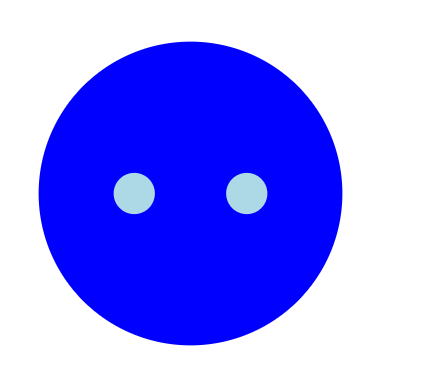
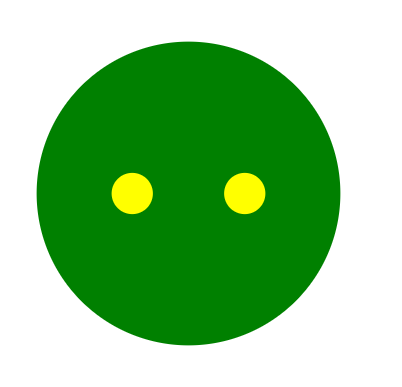
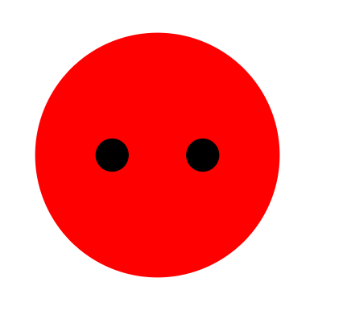
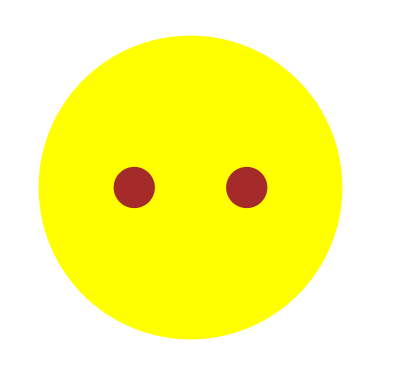

La ciudad de Carcassonne, en el sur de Francia, es famosa por sus inigualables fortificaciones
romanas y medievales. En este juego, los jugadores desarrollan el área alrededor de
Carcassonne y despliegan a sus seguidores en los caminos, las ciudades, lo claustros y los
campos. La habilidad de los jugadores para hacer prosperar la región y sacar partido a sus
ladrones, caballeros, granjeros y monjes determinará quién es el vencedor.
1. ¿Qué es el Carcassonne?
Los jugadores colocan las piezas de territorio por turnos. A medida que
lo van haciendo, los caminos, ciudades, campos y claustros van
emergiendo y creciendo. En estos territorios, los jugadores pueden
desplegar sus seguidores para ganar puntos. Los jugadores acumulan
puntos durante el desarrollo de la partida, y también al final de la
misma. El ganador será el jugador que haya conseguido sumar más
puntos tras el recuento final.
2. Componentes del juego
33 piezas de territorio (incluyendo una pieza de inicio),
ilustradas con segmentos de ciudades, caminos, campos y claustros.
Fichas de seguidores, y según cada jugador, puede elegir un color a su gusto.




Un marcador, para llevar la cuenta de los puntos que suman los jugadores.
Un contador con el tiempo restante de cada jugador.
3. ¿Cómo se juega al Carcassonne?
Los jugadores llevan a cabo sus turnos cuando salga por pantalla su nombre, comenzando con
el jugador indicado. Durante su turno, el jugador llevará a cabo las siguientes acciones, en el
orden indicado:
El jugador reciirá una pieza de territorio del montón, y debe colocarla en el juego.
El jugador puede desplegar uno de los seguidores de su provisión sobre la pieza de
territorio que acaba de poner en juego.
Si al colocar la pieza de territorio se completan uno o más claustros, caminos o ciudades
, se suman de inmediato sus puntos a su contador correspondiente.
A. Colocar las piezas de territorio en juego
Primero el jugador recibirá una pieza d territorio que todo el mundo podrá ver. A continuación,
la coloca en el tablero de acuerdo a las siguientes normas.
La nueva pieza de territorio debe ser colocada con al menos uno de sus lados tocando directamente
a otra pieza colocada anteriormente. Nótese que las dos piezas deben estarse tocando lado con lado;
no es suficiente con que se toquen por uno de sus extremos.
La nueva pieza debe ser colocada de modo que todos sus segmentos de campo, ciudad y camino se vean
continuados por segmentos del mismo tipo, en todas las piezas a las que esté tocando (los claustros
son una exceppción a esta norma, ya que no se encuentran divididos en varios segmentos, si no que
siempre están completos en una únicapieza).
Si se da la rara circunstancia de que la pieza que se acaba de robar no puede colocarse en juego de manera
legal ( y todo el mundo está de acuerdo en esto), el jugador la descartará y se le entregará
una nueva pieza.
B. Desplegar a los seguidores
Cuando el jugador coloca una pieza de territorio en juego, puede desplegar sobre ella a uno de sus seguidores,
de acuerdo con las siguientes normas:
El jugador sólo puede desplegar un seguidor por turno.
El jugador debe seleccionar un seguidor de u provisión (no puede utilizar un seguidor que ya esté en otra
pieza de territorio).
El jugador sólo puede desplegar al seguidor en la pieza de territorio que acaba de poner en juego.
El jugador debe elegir en qué parte de la pieza de territorio desplegar al seguidor.
No se puede desplegar un seguidor en un segmento de camplo, ciudad o camino, que esté conectado con otro segmento
del mismo tipo (a cualquier distancia) en el que ya haya un seguidor (sea del jugador que sea).
Cuando un jugador ha desplegado a todos sus seguidores, sigue colocando una nueva pieza de territorio cada turno.
Si bien los seguidores que están en juego no pueden ser cambiados de sitio, los jugadores los recuperan
cuando suman puntos por claustros, caminos y ciudades.
C. Puntuar por completar claustros, caminos y ciudades
Cada claustro, camino o ciudad es completado al colocar una nueva pieza de territorio, se cuenta su puntuación inmediatamente.
D. Recuperar seguidores
Cuando se suman puntos por un camino, ciudad o claustro completados (y sólo entonces), todos los seguidores implicados son devueltos
a sus jugadores, que pueden usarlos de nuevo en turnos posteriores.
Puede ocurrir que un jugador despliegue a un seguidor, sume puntos por un camino, ciudad o claustro, y recupere a dicho seguidor
en el mismo turno.
El jugador completa un camino o ciudad al colocar la nueva pieza de territorio.
Despliegue allí su seguidore.
Suma los puntos por la ciudad o comino completados.
Recuperar el seguidor sobrante.
4. Puntos
A. Camino completado
Un camino se considera sompletado cuando sus segmentos de camino en ambos extremos están conectados con un cruce,
un segmento de ciudad o un claustro. Entre ambos extremos puede haber cualquier número de segmentos de camino.
B. Ciudad completada
Una ciudad se considera completada cunando está totalmente rodeada por una muralla, en la que no queda nigún hueco
abierto. Una ciudad puede tener cualquier cantidad de segmentos.
Cada escudo que haya en los segmentos de la ciudad otorga al jugador dos puntos extra. Excepción:cuando una ciudad completada nada más consta de dos segmentos, el jugador sólo suma dos puntos (no 4),
más 1 punto por cada escudo.
C. Claustro completado
Un claustro se considera completado cuando la pieza de territorio en la que se encuentra está completamente rodeada por
otras piezas de territorio. En ese caso, el jugador que tenga un seguidor en este claustro sumará 9 puntos.
5. Recuento final
Primero se puntúan las ciudades, claustros y caminos incompletos en los que algún jugador tenga un seguidor.
Dicho jugador se lleva 1 punto por cada segmento que tenga el camino o ciudad. Además, cada escudo en la ciudad da al jugador
1 punto extra (para determinar quien se lleva los puntos en los caminos y ciudades con más de un seguidor, utiliza las mismas reglas
para los caminos y ciudades completas). Por cada claustro incompleto, el jugador que tenga un monje allí se llevará 1 punto por la
pieza de claustro, y otro punto por cada pieza de territorio que esté rodeando el claustro.